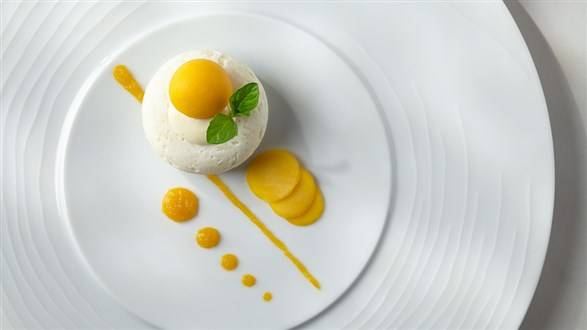

SUFLET Z MANGO
Suflet z mango – słoneczny deser według przepisu Pawła Małeckiego. Jesteśmy pewni, że go pokochasz!
SKŁADNIKI
SUFLET MANGO
- mango – 150 g (ok. 2 szt.)
- mąka pszenna – 2 łyżki
- woda – 30 ml
- proszek do pieczenia – ¼ łyżeczki
- cukier trzcinowy – 3 łyżki
- jaja, rozmiar L – 3 szt.
- cukier puder – 2 łyżki
DEKORACJA

DEKORACJA
- blender
- filiżanki lub kokilki o pojemności 120-200 ml
- piekarnik rozgrzany do temperatury 180°C z funkcją termoobiegu
PRZYGOTOWANIE
- KROK 1: PRZYGOTOWUJEMY MASĘ Z MANGO
- Mango obieramy ze skórki, oddzielamy miąższ od pestki. Miąższ kroimy na kawałki i blendujemy na gładką masę.
- W małym garnku zagotowujemy mango. Mąkę mieszamy z cukrem trzcinowym i wodą. Wlewamy do gotującej się pulpy z mango. Energicznie mieszając, doprowadzamy do zagotowania. Odstawiamy do przestudzenia
- KROK 2: PRZYGOTOWUJEMY CIASTO
- Oddzielamy żółtka od białek jajek o temperaturze pokojowej. Gdy masa przestygnie, dodajemy żółtka i dokładnie mieszamy.
- Białka z cukrem pudrem ubijamy na sztywno i mieszamy z wcześniej przygotowaną masą z mango. Na końcu dodajemy proszek do pieczenia.
- KROK 3: PRZYGOTOWUJEMY NACZYNIA DO PIECZENIA SUFLETÓW
- Filiżanki lub naczynka do sufletów dokładnie smarujemy roztopionym masłem, oprószamy cukrem pudrem.
- KROK 4: PIECZEMY SUFLETY
- Wykładamy masę z mango do ¾ wysokości naczynia. Suflet pieczemy przez 13-15 minut w temperaturze 180°C z funkcją termoobiegu.
- Podajemy zaraz po upieczeniu. Wierzch oprószamy cukrem pudrem.
KOSZTY
| |
Cena |
| mango 2 szt. |
27.4 zł/kg |
| mąka pszenna 1 kg |
4.25 zł |
| proszek do pieczenia |
1.70 zł |
| cukier 1 kg |
3.40 zł |
INFORMACJE O ALERGENACH
Suflet
może mieć wiele smaków! Ten, słoneczny deser, jest mangowy
Newsletter